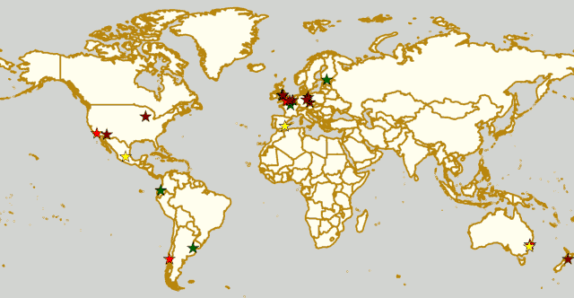

Weekend Highlights: 02 June 2019
The Sunday edition for this weekend is a lot shorter than the main weekend update, but these fixtures are all still true highlights for us.
Both highlights limited to 1 event per country, with an "extra" event allowed for a different kind of fixture (so, 1 tournament and 1 bootcamp), or if they involve Scottish leagues (since we are the Scottish Roller Derby Blog). Other notability might also allow the extra event - great posters, notable teams, etc.
In a bid to make this list as useful as possible, we've avoided links to Facebook except where noted. (Links to Teams are to non-Facebook resources - Instagram, or actual team pages - we'd strongly recommend that Teams get themselves an actual webpage [we can help host one if you need help]).
Locations are roughly organised East-West (with things before the weekend out sequence at the start).
Sun: Geelong, VIC, Australia
Geelong Roller Derby host a double-header event, including a modified-contact scrimmage, and a rematch with WestSide Derby Dollz.
- Modified Contact Scrimmage, Open To All genders (amber level - low contact)
- Geelong Roller Derby versus WestSide Derby Dollz (west Melbourne)
Event starts: 1630 Sunday (doors open)
Venue: Barwon Valley Activity Centre, 1 Barwon Heads Road, Geelong, VIC, Australia
Sun: Kadena, Okinawa, Japan
Okinawa Roller Derby, who have recently become the overarching Okinawan Roller Derby league, merging with Devil Dog Derby Dames, host a home teams event... where the home teams are Devil Dog Derby Dames, and Kokeshi Roller Dolls (the pre-merger Okinawa Roller Derby's old name). Free entry!
As a home teams event, Flat Track Stats does not list this.
Event starts: 1430 Sunday (doors open)
Venue: Risner Fitness Center, Kadena Air Base, Okinawa, Japan
Sun: Liège, Belgium
Roller Derby Liège host a triple header round-robin of MRDA-gender policy derby, with an international bent.
- Les Vîkings (Liège M) versus Chaos Engine (Manchester MB)
- Chaos Engine versus "Unamed Bastereds from the World" (Europe-wide mashup team)
- Les Vîkings (Liège M) versus "Unamed Bastereds from the World"
Flat Track Stats does not list "UB" teams as they exist only for a single event. As such only the first game is on FTS
Event starts: 1100 Sunday
Venue: Rue Sous le Bois 2, Liège, Belgium
Sun: Quimper, France
[FACEBOOK LINK] [FTS LINK 1] [FTS LINK 2]
Kemper Roller Derby host a double header of derby, as they take on two nearby teams in succession!
- Bomb'Hard (Kemper) versus Mortal Condate (Rennes B)
- Bomb'Hard (Kemper) versus Morues (Lorient B)
Event starts: 1330 Sunday
Venue: 64 Avenue de la France Libre, Quimper, France
Sun: Leicester, UK
Roller Derby Leicester host an Open Scrim, open to WFTDA-gender policy conforming skaters, mins-passed (or mins-passed minus 27/5 at head ref's discretion). Also open to any visiting officials who would like to practise positions or skills.
Event starts: 1015 Sunday
Venue: The Queen Elizabeth II Diamond Jubilee Leisure Centre, 50 Duns Lane, Leicester, UK
Sun: Birmingham, UK
Crash Test Brummies host a closed bout against North Wales Roller Derby!
Sun: Osorno, Chile
Deskarriadas continue their 5th birthday weekend hosting an officiating workshop by Endorfina, including a discussion of recent WFTDA rules updates.
Event starts: 1400 Sunday
Venue: Colodep Osorno, Calle O'Higgins, Osorno, Chile
Weekend Highlights: 01 June 2019
There are far too many valuable fixtures to cover all of them (especially in France and the UK, which tend to have multiple tournaments, bootcamps etc all on one weekend), but we also don't want to be so strict as to have just 1 per country. So, we'll be doing the following:
Two highlights a weekend - Sat + (All Weekend); and then a smaller one for Sunday.
Both highlights limited to 1 event per country, with an "extra" event allowed for a different kind of fixture (so, 1 tournament and 1 bootcamp), or if they involve Scottish leagues (since we are the Scottish Roller Derby Blog). Other notability might also allow the extra event - great posters, notable teams, etc. (League birthdays may count as "special" enough, at our discretion ;) )
This weekend is particularly rich in short-format events, with Sur5al, Roller Derby Sevens, and Short Track Roller Derby all happening around the world! There's also a world premiere of the new Street Roller Derby ruleset (in Germany), which is another attempt at producing a simpler, easier-to-officiate version of the game.
In the UK, the Scottish Clause means we're covering 3 different events, as our leagues are all off down south to play derby this weekend!
In a bid to make this list as useful as possible, we've avoided links to Facebook except where noted. (Links to Teams are to non-Facebook resources - Instagram, or actual team pages - we'd strongly recommend that Teams get themselves an actual webpage [we can help host one if you need help]).
Locations are roughly organised East-West (with things before the weekend out sequence at the start).
Sat: Levin, New Zealand
Whenua Fatales Roller Derby League host their annual (Open To All genders) Sur5al tournament, allowing them to run a full 16 team round-robin tournament in 1 day.
Flat Track Stats does not record Sur5al results (and the teams are all mashup) so this is not in FTS
Event starts: 1100 Saturday (doors open)
Venue: Horowhenua Events Centre, 31 Victoria Street, Levin, New Zealand
Sat: Maitland, NSW, Australia
Maitland Roller Derby celebrate their 5th Birthday with a bout against The Northern Beaches, entertainment from Irrawang High School Drum Corp, birthday cake and a licensed bar!
- Maitland Roller Derby versus The Northern Beaches (Curl Curl + environs, NSW)
Event starts: 1800 Saturday (doors open)
Venue: Maitland Federation Basketball Stadium, Maitland, NSW, Australia
Sat-Sun: Sydney, NSW, Australia
Sydney City SMASH host another semi-secret MRDA tournament, Velodrama II, a closed event which they once again can't advertise much due to venue restrictions. (Which is also why we don't have a Facebook event to link to.) This will be a three-team round robin, with MRDA-Sanctioned bouts.
- Teams:
- Sydney City SMASH
- Capital Carnage (Canberra M)
- Brisbane Men's Roller Derby
Event starts: 1400 Saturday (first bout)
Venue: Secret!
Fri-Sun: Helsinki, Finland
Kallio Rolling Rainbow host the 2019 edition of Finland's big WFTDA-sanctioned invitational, the portmanteau Finvitational 2019! With 5 teams, including one from outside Europe, in an almost-round robin (only Middlesbrough versus Calgary is missing from the schedule), this is a packed two-day schedule on the weekend, with two games spilling forward into the Friday in a closed session. As is usual for Finnish events, there will be a livestream.
- Teams:
- Tiger Bay Brawlers (Cardiff)
- Calgary Roller Derby
- Dock City Rollers (Gothenburg)
- Middlesbrough Roller Derby
- Kallio Rolling Rainbow (Helsinki)
Sat-Sun: Prague, Czech Republic
Hard Breaking Dolls continue the trend in Poland for hosting short-format tournaments with an 8 team Roller Derby Sevens tournament. 10 games are packed into one day (meaning that this is probably an elimination tournament, with some consolation bouts), with competitors from across Poland and Central and Eastern Europe!
- Teams:
- Hard Breaking Dolls (Prague)
- Magma Monsters (Erfurt)
- Trash Bunnies (Rollergirls of the Apocalypse | Kaiserslautern)
- Team Apokaliptyczna Trzcina Szczebrzeszyna (Wors Warsaw + Warsaw Hellcats)
- Fearless Bruisers (Innsbruck)
- F.A.R.T. (Augsburg)
- Riga Roller Derby
- Prague City Roller Derby
Flat Track Stats does not track Roller Derby Sevens bouts, so this is not in FTS
Event starts: 1000 Saturday (doors open)
Venue: Sportovní Hala Jižní Město, Květnového vítězství 1554/54, Prague, Czech Republic
Sat: Berlin, Germany
H.O.S.S.A. (Link to Facebook, sadly), the Northern Germany and Netherlands Men's derby collective, host the world's first demonstration of the Street Roller Derby ruleset. Street Roller Derby is yet another ruleset designed to make Roller Derby easier and more convenient to play, with less officiating load, and a simplified ruleset. (In the case of Street Roller Derby: officiating is managed by skaters not currently playing; there's no "Lead Jammer" powers; scoring, like in Short Track is 1 point per pass, not per skater passed; there's also no set duration; a reduced penalty list; and harsher penalty rules (a penalty has you sit out the rest of the jam!) ).
Unfortunately, this ruleset is currently only really being promoted on Facebook. We hope that it will become more accessible to non-Facebook users in future.
- "Teams":
- H.O.S.S.A. (North Germany / Netherlands )
- Team Madstop Roller Derby (Potsdam)
Event starts: 1500 Saturday
Venue: Tempelhofer Feld, Berlin, Germany
Sat: Leipzig, Germany
[FACEBOOK LINK] [FTS LINK D 2] [FTS LINK D 1]
The Riot Rocketz of Leipzig host a double header for this season of the Bundesliga: one fixture for Division 2 (which Leipzig promoted into at the start of this season), and one for Division 1.
- Riot Rocketz (Leipzig) versus Bembeltown Rollergirls (Frankfurt/Main) [Bundesliga D 2]
- Dresden Pioneers versus Ruhrpott Rollergirls (Essen) [Bundesliga D 1]
Event starts: 1200 Saturday (doors open)
Venue: Konradstraße 30, Leipzig, Germany
Sat: Gent, Belgium
GO-GO Gent Roller Derby host Star Track, a mini-bootcamp on Rolla Skate Club's Short Track Roller Derby, followed by a mini-tournament using the rules. Coached by UAE Roller Derby All-Stars` Inga Knee'her!
- 1000 Saturday - Short Track Bootcamp
- 1215 Saturday - closed door Short track mini-tournament
Event starts: 1000 Saturday
Venue: Sporthal Driebeek Gentbrugge, Driebeekstraat 22, Gent, Belgium
Sat: Paris, France
Paris Rollergirls host a 1 day bootcamp for beginner/intermediate level, run by Paris Rollergirls All-stars. This event raises funds to support Paris Rollergirls' attendance at ECDX in the USA.
Event starts: 0900 Saturday
Venue: Gymnase la Plaine, 13 Rue du Général Guillaumat, Paris, France
Sat-Sun: Calais, France
The Black Tagada, Zombeers and Dead Dragibus, the three aspects of Roller Derby Calais, collectively host a day of short-format roller derby, with the return (for the 5th time) of their Hit My Valentine Sur5al tournament. We say "Sur5al tournament", but really this is a whole weekend of Roller Derby surrounding the tournament: both days open with Open Scrimmage with special rules ("reverse derby direction" on Saturday, ), and the Saturday ends with a Junior Derby scrimmage as well.
Flat Track Stats does not list Sur5al tournaments (and in any case, these will be teams created just for this event)
Event starts: 0930 Saturday (doors open)
Venue: Forum Gambetta, 23 Boulevard Gambetta, Calais, France
Sat: Brighton, UK
[FACEBOOK LINK] [FTS LINK 1] [FTS LINK 1]
Brighton Rockers Roller Derby are hosting Glasgow's finest for an A/B double header as part of the Brighton Fringe Festival.
- Brighton Rockers (Brighton A) versus Irn Bruisers (Glasgow A)
- Brighton Rockerbillies (Brighton B) versus Maiden Grrders (Glasgow B)
Event starts: 1400 Saturday (doors open)
Venue: The Dolphin Leisure Centre, Pasture Hill Road, Haywards Heath, UK
Sat: Salford, UK
Arcadia Roller Derby host the fourth of the British Champs Tier 2 North (WFTDA-side) fixtures this year. The hosts, currently second-from-bottom on the leaderboard, face Hallam Hellcats, just one space above them, in a battle for safety from the relegation zone. Meanwhile, Aberdeen's Granite City, currently in that relegation zone, face the imposing Hulls Angels, currently in 2nd place!
- Granite City Roller Derby (Aberdeen) versus Hulls Angels Roller Derby
- Arcadia Roller Derby (Manchester) versus Hallam Hellcats Roller Derby (Sheffield/Hallam)
Event starts: 1015 Saturday (doors open)
Venue: University of Salford Sports Centre, University Road, Salford, Greater Manchester, UK
Sat: Liverpool, UK
Liverpool Roller Birds host the 4th fixture of the British Championships Tier 1 North (WFTDA-side) this season. The hosts currently top the leaderboard for this tier, with an unbroken win record, and it seems likely that this will continue, as they face relegation-zone placed Sheffield Steel. We expect a much closer game between Manchester B and Auld Reekie B; currently near-tied (even with score difference) for 2nd and 3rd place in the board!
- Checkerbroads (Manchester Roller Derby B) versus Auld Reekie Roller Derby Reserves (Edinburgh B)
- Liverpool Roller Birds versus Sheffield Steel Roller Derby
Event starts: 1400 Saturday (doors open)
Venue: Greenbank Sports Academy, Greenbank Lane, Liverpool, UK
Sat-Sun: San Javier, Murcia, Spain
Roller Derby Murcia host an international bout as the Molly Hatchets come over from France.
- Roller Derby Murcia versus Molly Hatchets (Pontarlier)
Event starts: 1700 Saturday
Venue: Avenida Gran Vía de la Manga, Km 12, San Javier, Murcia, Spain
Sat/Sun: Buenos Aires, Argentina
Wonderclan Roller Derby host the first edition of their "Magenta Party", all-night dance and music events. This one has a "bizarre" theme, which we're not quite sure we're translating correctly, but...
Event starts: midnight, Saturday
Venue: Centro Cultural Otra Historia, Estomba 851, Villa Orturzar, Buenos Aires, Argentina
Sat: Osorno, Chile
[FACEBOOK LINK] [FTS LINK 1] [FTS LINK 2] [FTS LINK 3]
Deskarriadas host a 5th birthday celebration, in the form of a triple-header round robin tournament! (The Sunday also has an event, which we'll mention in the Sunday appendix to this update.)
- Teams:
- Deskarriadas (Osorno)
- Diosas Volcánicas (Puerto Montt)
- Indomitas (Valdivia)
Event starts: 0900 Saturday
Venue: Club Deportivo Osorno, Calle Caupolicân 8, Osorno, Chile
Sat: Quito, Ecuador
Forajidas Roller Derby host the first of three open-recruitment and try-derby sessions to help build roller derby in Quito, Ecuador.
Event starts: 0900 Saturday
Venue: Cumandá Parque Urbano, Avenue 24 de Mayo, Quito, Ecuador
Sat-Sun: Querétaro, Mexico
[FACEBOOK LINK] [FTS LINK 1] [FTS LINK 2] [FTS LINK 3]
Querétaro Roller Derby host a triple header of Roller Derby, as a round robin between the hosts' Rock City and teams from neighboring regions!
- Teams:
- Rock City (Querétaro)
- División del Norte (Chihuahua)
- Ovejas Negras (Morelia)
Event starts: 1130 Saturday
Venue: Aud. Ciencias Naturales UAQ, Campus Juriquilla, Querétaro, Mexico
Additionally, these events in North America are of interest due to the attendance of other teams:
Fri-Sun: Milwaukee, WI, USA
Brewcity Bruisers host the 10th edition of their annual invitational, the Midwest BrewHaHa! This is a multi-tier tournament with both MRDA-Sanctioned and WFTDA-Sanctioned bouts, as well as an unsanctioned B-tier for WFTDA leagues. With a huge number of participants, this is simply a tournament for WFTDA ranking, without a structure in itself.
This invitational is of interest to us due to European participation in both the WFTDA-Sanctioned and MRDA-Sanctioned tiers, with France's Lomme Roller Girls, and Belgium's Manneken Beasts playing.
- WFTDA-tier Teams:
- Madison Roller Derby (Madison, WI)
- Team United Roller Derby (Des Moines, IA)
- North Star Roller Derby (Minneapolis, MN) [Tier A and B]
- Toronto Roller Derby (Toronto, ON, Canada)
- Ohio Roller Derby (Colombus, OH) [Tier A and B]
- Winnipeg Roller Derby League (Winnepeg, MB, Canada)
- Tri-City Roller Derby (Waterloo, ON, Canada)
- Gem City Roller Derby (Dayton, OH) [Tier A and B]
- Brewcity Bruisers (Milwaukee, WI) [Tier A and Tier B]
- DC Rollergirls (Washington, D.C.)
- Rage City Rollergirls (Anchorage, AK)
- Lomme Roller Girls (Lomme, France)
- MRDA-tier Teams:
- St. Louis GateKeepers Roller Derby (St Louis, MO)
- Bridgetown Roller Derby (Portland, OR)
- Texas Men’s Roller Derby (Mesquite area, TX)
- Manneken Beasts (Brussels, Belgium)
- YOUR MOM Men’s Roller Derby (Des Moines, IA)
- Chicago Bruise Brothers Roller Derby (Chicago, IL)
Event starts: 0900 Friday (first game)
Venue: UW-Milwaukee Panther Arena, 400 W Klbourn Avenue, Milwaukee, WI, USA
Sat-Sun: Phoenix, AZ, USA
Arizona Roller Derby hosts the return of their Monsoon Madness invitiational, with two simultaneous tournaments - one A team, and one B team. The A team tier is, of course, WFTDA Sanctioned. This is of interest to us due to the attendence of Buenos Aires' `2x4 Roller Derby`_ in both tiers - Team OSOM in A, and Lxs Pibxs in B. As with Finvitational, this is almost a round-robin for both tiers!
- Leagues:
- 2x4 Roller Derby (Buenos Aires, Argentina) [Tier A and B]
- Arizona Roller Derby (Phoenix, AZ) [Tier A and B]
- Dallas Derby Devils (Dallas, TX) [Tier A and B]
- Tampa Roller Derby (Tampa, FL) [Tier A and B]
- Rat City Roller Derby (Shorelina, WA) [Tier A]
Event starts: 0900 Saturday (doors open)
Venue: Ability 360 Sports & Fitness Center, 5031 E Washington St, Phoenix, AZ, USA
Sat-Sun: Los Angeles, CA, USA
Angel City Derby host a Mayday Brawl-B-Q, a two-day tournament with a little less scale than the other USA invitationals above. What makes this one special is the inclusion of a Juniors bout, and the attendance of Baja Roller Derby from Mexico. (Once again, the WFTDA part of the tournament is almost a round-robin, missing just Misery Loves Company versus SoCal).
- Teams:
- Angel City Shore Shots (Los Angeles, CA)
- Baja Roller Derby (Baja California, Mexico)
- Misery Loves Company (Morgan Hill, CA)
- SoCal Derby (San Diego, CA)
- Junior bout:
- Angel City Junior Derby versus Foothill Junior Foxtails (Fontana, CA)
Event starts: 0900 Saturday (doors open)
Venue: 1519 W 139th St, Los Angeles, CA, USA
Guest Post:TNT Roundup - Hull Yeah!
We're happy to present this guest post from Hulls Angels Roller Derby's All Stars Captain, Wilken, on their recent experience at the Aalborg-hosted The Northern Takedown international tournament.
On May 4th 2019 Hulls Angels All-Stars travelled to Denmark to participate in Aalborg Roller Derby’s TNT (The Northern Takedown) Tournament.
This is the 3rd year Aalborg’s Combat Bullies have hosted a tournament and the first year which HARD has competed.
Not only was the tournament the first international tournament HARD has competed in, it was my first tournament as Captain.
Looking at the rosters of the other teams (Belfast Roller Derby, Rockcity Rollers, Cologne’s Graveyard Queens and the hosts Aalborg’s Combat Bullies) it was clear that this was going to be a tough tournament! Not only did we have 3 (!) games on the Saturday we were also only taking 9 skaters.
Nerves aside, the key mantra for this weekend was that we were going to play our game which involved lots of phrases such as ‘butts in holes!’ lurrr and slurrrr’ and ‘back, back, back’ like ducks quacking.
A special shout out goes to my Vice-Captain Milv, who not only organised the bulk of the trip but sorted out a cabin in the woods for us to stay in. There was definitely some Friday 13th vibes going on as we walked into the living room to see massive film posters with superimposed Danish politicians’ faces on them! Anyways! Bunk beds were allocated and a food shop to Aldi was done! Thrill Murray cooked up a super tasty pasta salad so we could carb load ready for the following day.
Aalborg Roller Derby have a fantastic venue and were superb hosts throughout the whole weekend with cracking food provided and a wonderful airy venue.
The first game was against Belfast, and it seemed to fly by! After an anxious start we slowly settled into a rhythm and despite having four(!) foul outs (oops!) we’d cinched our first victory abroad! For me, I was happy with one win as Hulls Angels have never managed to claim a win in Europe before! But our offensive powerhouse Hi-Jaxxx spurred us all on for more as we prepared to take on the top seed of the tournament- Eindhoven’s Rockcity Rollers.
Hulls Angels (in Green) at TNT (Photo by: MiGu)
I feel that it was this game in which we really started to hit our groove. The first game was full of nervous energy, but here we kept calm and focused and on the game plan.
As the game got underway, our newly promoted All Star jammer Dani was smashing through walls as if they weren’t there, Purdy opened up holes for our jammers whilst simultaneously shutting down the opposition. Rockcity were tough but we were living up to our name. At the end of the game we managed to sneak a narrow victory!
Two wins down and I was on cloud nine! But we still had our last game of the day to go. Pressure mounted as we realised that if we won this game, we were guaranteed a medal! Bench Coach Rollo made sure we stayed centred and focused as we prepared to close Saturday against Cologne, who like us had also played three games in one day.
Although both teams were beginning to run low on energy, Cologne went out hard and fast! We really had to dig in and band together. At times the game could have gone either way! But as the clock ticked down and the final whistle was blown, we could hardly believe we had done it. Three wins in one day and a guaranteed a medal!
As we all got back to our creepy cabin, had a hot shower and nursed our aches and pains, it actually dawned on us…. What if? What if we could win this?
Thankfully on the Sunday we only had one game- the hosts Aalborg’s Combat Bullies.
The Hulls Angels Bench! (Photo by: Jen Smith)
Despite Aalborg already having played that day we knew that this would not have given us any advantage. We had been fortunate enough to have watched their previous games and they looked like strong hitters that played a very physical game! We weren’t wrong!
As the game got underway, Aalborg had begun to rack up an uncomfortable lead, so a tactical time out was called by Rollo, to focus. This seemed to do the trick, as we went back on track with a new energy. F-Bomb was closing down any enterprising jammers wanting to sneak up the inside line, Melon Collie was the glue of the team, keeping us together and keeping us calm when the pack started to speed up. Frost Spite was defying the laws of physics as she jammed for what must have felt like jam 200! But it was then that the tide began to turn back in our favour! That gold medal was within sniffing distance!!!
The final whistle blew………. and that was it! We’d done it! And I am pretty sure most of us are still wearing out medals now!
I truly feel that this weekend was a mammoth team effort. We could not have skated as well as we did if it was not for our amazing bench crew; Bench Coach Rollo for winning his first official review! Line Up Manager Ju for not losing her head when we may have been losing ours, and Mansfield Roller Derby’s Dragon’s Jen, who was so supportive and quick with the feedback. You were all completely invaluable. Thank you.
On behalf of Hulls Angels All-Stars, I would also like to thank everyone involved in organising and taking part in The Northern Takedown 2019, the NSOs, referees, announcers, photographers, catering staff, volunteers and Aalborg Roller Derby. For our first European tournament you have set the bar very high! Amanda! We missed you every day!
Overall, it was a weekend of sweat ‘taches, strangling goose poses, wooden giants, paracetamol, sunshine and fun. I can’t wait for the next one! Groove is in the Hull!!
And I won a hat! #winnerwinnerchickendinner

Wilken! (Photo by: Darryl Brooks Photography)